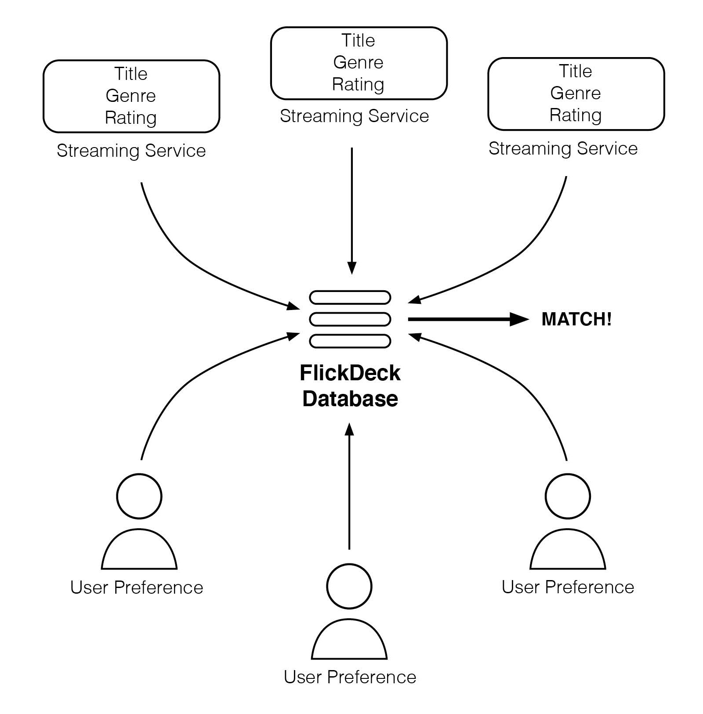

Project Idea
Overview
With so much content available between various content streaming services – think of services like Netflix, Stan, Amazon Prime and Disney Plus, to name a few – it is becoming increasingly more difficult to decide on a title to watch. This is especially true when trying to choose a title for more than one person, as the question becomes can you find something you both enjoy?
Enter FlickDeck. An app designed to help streamline the process of deciding what to watch and where to access it from, FlickDeck offers the ability to link multiple user accounts and create a shared list of ‘liked’ or relatable content. These content lists are presented to each user in a simple card format: like the popular dating app Tinder, the user can swipe left or right on each content card to indicate if they like or dislike the content. Once a content match is found, the users will be alerted to the match and receive information of where to watch the content.
Motivation
Content streaming services have fast developed to become the preferred method of entertainment for most households, with Australia alone boasting at least 11.9 million Netflix subscribers (Williams, 2020). When it comes to deciding on what to watch, however, a 2016 American study found that on average users spend over 17 minutes browsing Netflix before selecting something to watch; additionally, at least 40% of users were interested in watching something different to their partner or spouse (Moscaritolo, 2016).
While curator and aggregator apps such as reelgood and dinggo exist – neither of which are currently available in Australia - they do not address the issue of partners not agreeing on content to watch; FlickDeck’s specific purpose is to curate a list of content for a selected linked user group.
Description
FlickDeck could crudely be summed up as ‘Tinder, but for movies and TV shows.’
It will function as an application that can be downloaded on a smartphone or tablet device or accessed via a website. After accessing FlickDeck, users will be prompted to create an account with a unique username; once complete, they will be prompted to connect and link their account with another user they plan to watch content with, such as a partner or spouse. They will also be asked to confirm what current streaming services they have access to. Once linked, the content determining process will begin. Each user will be shown a content card that displays the poster and name of a specific movie or TV show. The user then has 2 choices:
When FlickDeck recognises that linked users have both swiped right, or displayed interest in a content card, the users will be alerted to the match and then guided on where to stream or access the movie or TV show. In order to display updated content to users, FlickDeck will utilise a database of movies and TV shows taken from major streaming platform libraries, such as Netflix, Stan or Amazon Prime. It will then only access the data relevant to the user’s accessible streaming services.
The overall functionality and user experience of FlickDeck will be designed to be simple and intuitive, with the aim of streamlining the content-making decision so users can relax and enjoy the movie or TV show. This will be assisted by offering users a list of common interests to select from rather than browsing for extended periods. In the future, FlickDeck could also be further integrated with streaming services by allowing matched content to be added to the recommended or ‘watch next’ lists within the service itself.
Tools and Technologies
To develop this project, we have categorised the tools and technologies required into two categories:
Planning, Collaboration and Design Tools
For planning, collaboration and design tools we plan on continuing to use Microsoft Teams as the primary communication channel, with the additions of Miro for live collaborative planning sessions and Figma for product wireframes and prototypes.
Figma was chosen as the wireframing and prototyping tool as it is a tool that can be used throughout the design and creation phases of digital products to create wireframes, design systems, prototypes and tests. It is currently ranked as the second most popular UI design and prototyping tool, making very strong gains on Sketch by nearly doubling the number of users of the UI since 2018 (UXTools.co 2019). The application can be used directly through a web browser or the Windows and MacOS operating system. iOS and Android apps are also available for download to allow for the live previewing of files in a test environment. (Figma 2020).
The application is highly focused on collaborative workflows with the ability to edit files together in real-time or to simply view the action in "observation mode". Files are also supported by version history with the ability to view what changes have been made by individual users. Access to the application is split into three pricing tiers: Starter, Professional, and Organisation; pricing ranges from free on the Starter plan (with limited use and users); $12 USD per month for each user on the Professional plan; or $45 USD per month on the Organisation level plan. Students are eligible for free access to the Professional plan. (Figma 2020).
Development Tools
A compiler (Eclipse) and relevant IDEs and plugins are required to develop Swift and Kotlin applications; alternatively, stand-alone app development applications such as swing2app that required no coding experience could be employed to reduce development time and to produce a minimum viable product. This would allow the application to be launched and tested with live users more rapidly than programming from scratch.
Data will need to be queried by utilising existing databases, employing unofficial APIs, or through data scraping; this data would then need to be stored in a main database, capable of operating over the cloud – see Establishing a database.
Utilising existing databases
FlickDeck will require a large amount of movie and TV show data which could be obtained through an open-source API like The Open Movie Database (OMDb) API (OMDb API, n.d.).
Available as a web service online, the OMDb API obtains information about movies and TV shows from a user-created and maintained database. Obtaining a free API key will allow an application or website to search for a movie or TV show by title and return data containing the content’s year of release, content rating, runtime, genre, director and writer, cast, plot, awards & nominations, an image of the poster, and even user ratings via content website IMDB.
When a user likes or swipes right in FlickDeck on a displayed movie or TV show, the OMDb API could be used to query the database for that approved content and determine key factors including genre, cast, directors & writers, and year of release. This data could then be used to develop a viewing profile and allow FlickDeck to suggest more appropriate, relatable content.
Unofficial APIs and data scraping
In 2014, Netflix completely closed its previously public API. For FlickDeck’s development, this means that the application will not be able to access an established content database of the streaming service platforms and cannot pull/display data directly from the service. To circumvent this, FlickDeck may need to utilise unofficial APis or employ data scraping tools to obtain the necessary data.
There are several unofficial API’s, such as Guidebox API, that offer a range of data and resources from streaming services at a cost. These unofficial APIs mostly obtain this data through data scraping, which is a process in which information is pulled from the HTML code on a given website (McClendon, 2015). Netflix internally maintains an API to transfer information to its mobile application (Stevesie, LLC, 2020), and intercepting this network connection can be used to determine catalog data.
For a data scraping program to be able to intercept these connections, the endpoints that handle the data wanted must be located. The process for this is fairly involved and requires virtualisation of the application on a computer based virtual phone operating system such as android and a network activity monitoring program such as Charles (McClendon, 2015). Using the app to go through actions that may net the access points of information we need such as clicking more information on a movie may give access to an endpoint that handles such data (McClendon, 2015). Once the appropriate points are found is when a data scraper program can be developed. Using the http URL’s that have been observed a scraper program can make pull requests from the same points to then store the data in a separate repository for the FlickDev team to access (McClendon, 2015). The implementation of such a strategy is subject to experience and resource availability as it may prove more economical for the development team to simply pay a fee to access an established API.
Establishing a database
Some form of database management system (DBMS), such as the open source MariaDB server (MariaDB Foundation, n.d.), would be required to store, sort, categorise, and establish links between the compiled movie and TV show data. Available through GitHub (GitHub, Inc. 2020), MariaDB Server is a relational database tool that organises data into tables which can be linked, or related, based on common attributes. With multiple fields for each record in the database, MariaDB Server allows for quick comparison between records and to create a new table using a single query.
As an example, a FlickDeck user may like or swipe right on a romantic-comedy movie released in 2008, starring Jane and John Doe. Based on this basic data, the MariaDB server could be queried to locate and return records that contain at least 2 of the following attributes:
- Year of release: 2008
- Genre: romance, comedy
- Cast: Jane Doe, John Doe
These records would be returned as a singular table that could be used to display to the user relatable content. By storing more details about the movie or TV show and narrowing the scope of the database query, the relational database will return records that closer match the user’s viewing preferences and could help suggest more relatable content. A relational database could also compare and find similarities between multiple user’s data tables. MariaDB Server also allows for cloud integration.
Front End Tools
The development of this project will require a code editor such as Atom to edit the HTML, CSS and Java Script for any web interface or alternatively platforms such as phonegap or ionic framework could be employed.
Atom has been chosen as FlickDev’s primary code editor due to the availability of plugins that enable the expansion and customisation of the editor and its close integration with GitHub.
Skills Required
A proficient skill set in coding will be required for this project, as well as design skills to develop the user interface of the application. A website like proto.io could be used to develop initial prototypes and further expanded using Adobe design applications. A team that has experience in developing and maintaining an online, cloud-based service would be extremely beneficial to the project. For specific systems and tools, the following skills are required:
- IOS and Android apps
- iOS app development would require Swift (Apple, 2020).
- Android app can be written in Kotlin (Android, 2020).
- Website
- HTML, CSS and JavaScript (GeeksforGeeks, 2020).
- Database
- MySql, PHP, and Java Script (Spinx, 2020).
Outcome
If the FlickDeck project is successful, it is reasonable to assume that users will be able to consume more content; eliminating the stress and pressure of picking the ‘right’ movie or TV show will help create a more enjoyable and care-free experience for users and households. Further into the future, it is possible that the concept and execution of this application could be fully integrated into streaming services as they strive to provide a better user experience for their customers.